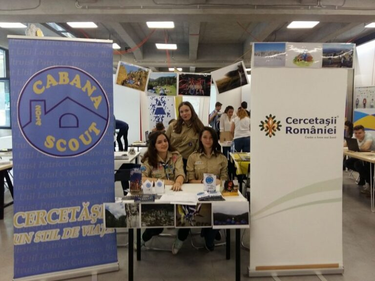

Ce am făcut la Opportunity Weekend

Weekendul 13-14 mai a fost unul dintre cele mai productive din acest an cercetășesc. Pentru prima dată, cercetașii au ajuns la Opportunity Weekend – un eveniment dedicat voluntariatelor și cursurilor pentru adolescenți.
Noi ne-am organizat foarte rapid pentru cele două zile, astfel încât majoritatea am interacționat cu oameni în stilul propriu și sperăm noi că am reușit să arătăm cu adevărat implicarea și rolul cercetaşilor în comunitate.
Pentru unii a fost chiar prima oară când au aflat că în România există cercetași și sunt foarte dornici să intre în marea familie. Pe lângă acestea, am avut și noi ocazia să aflăm despre alte organizații. De unele am fost atât de încântați încat ne-am înscris la programele lor.
Vizibilitatea noastră ca și organizație a crescut cu siguranță și lucrul care îmi confirma asta este apariția noastră la știrile ProTV și în vlogul lui Vlad Grigorescu. Rezultatele acestui eveniment se vor vedea la toamnă, când vom începe înscrierile și așteptăm un număr destul de mare de aspiranți, având în vedere numărul doritorilor.
Ana Vătau